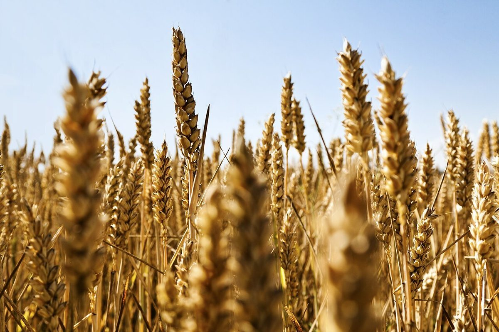
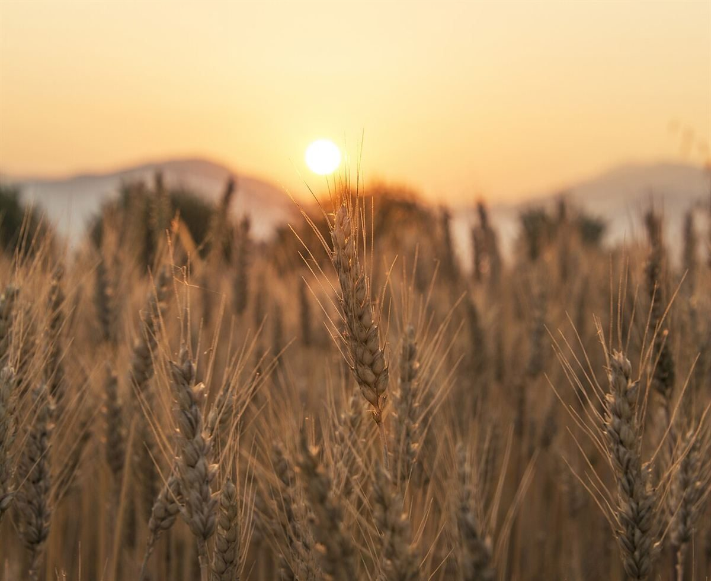

制作側の連想
「晴」の字から、傘の骨を数えてみる
店名の由来は分かりません。制作側は「晴」という字から、晴れの日にも雨の日にも差せる「晴雨兼用の傘」を連想しました。傘の骨は八本。そこでこのページは、ひらいた傘を上から見たような放射状の縞と、傘の縁のようなスカラップで組んでいます。制作側の連想で、お店の理念・由来とは無関係です。
八本の骨(イメージ)
八つの空もよう
写真はお店や彦根市のものではありません。空と穂などのイメージで選んだ、国外・撮影地不明のフリー素材です。

撮影地: 不明(イメージ) 1はれ

撮影地: 不明(イメージ) 2かぜ

撮影地: 不明(イメージ) 3くも

撮影地: ドイツ・オスナブリュック(イメージ) 4ひなた
撮影地: 不明(イメージ) 5うすぐもり

撮影地: インド・ロナワラ(イメージ) 6ゆうぐれ

撮影地: 不明(イメージ) 7ゆうやけ

撮影地: 不明(イメージ) 8ひとやすみ
ご案内
お店のこと(確認できたものだけ)
| 所在地 | 〒522-0086 滋賀県彦根市後三条町２６３−５ |
|---|---|
| 電話 | なし |
| 営業時間 | 準備中 |
| 定休日 | 準備中 |
| ご予約 | 準備中 |
| 駐車場 | 準備中 |
| SNS | Instagram @harepan814 |